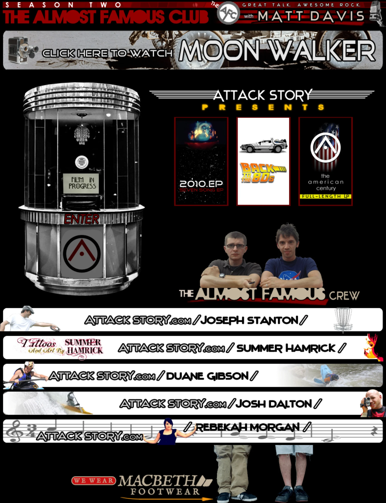
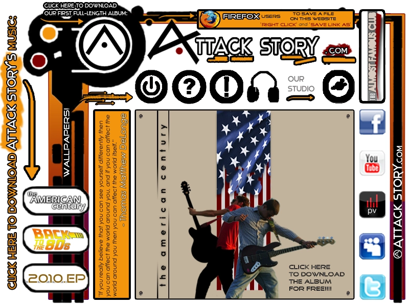
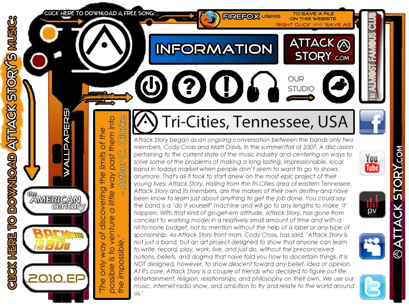
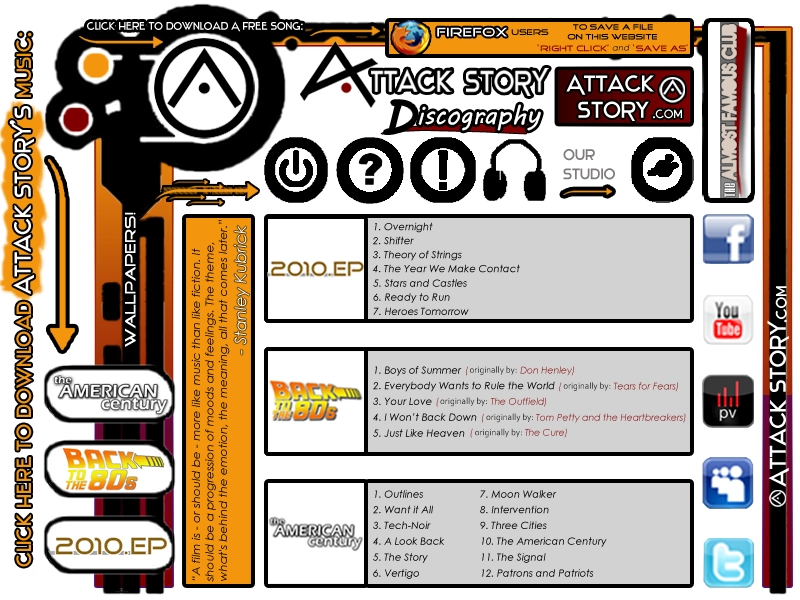
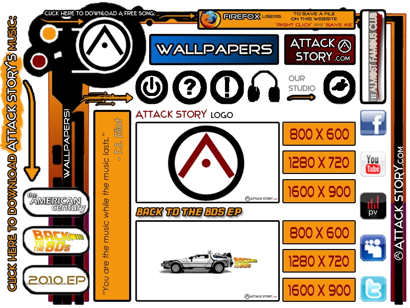
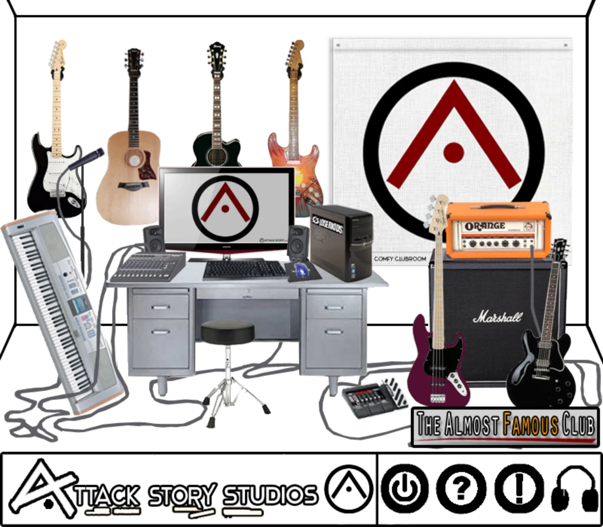

Matthew A. Davis, MBA
Operations & Corporate Development · Systems Design · Strategic Communications · Independent R&D

AttackStory.com · 2010 — 2011
Attack Story
Attack Story was a two-man band, Cody Cross and me, based in Bluff City, Tennessee. We wrote, played, and recorded our own music, released it ourselves, and gave it away for free. I built the website the same way we did everything else in the band: by hand, and with literally no budget.
The first version went live in December 2010. It survives now only in the Internet Archive. Our first EP was called 2010.EP, after Arthur C. Clarke’s 2010: Odyssey Two and its 1984 film adaptation, 2010: The Year We Make Contact, directed by Peter Hyams. I built the site around that idea, imagining it as a look inside HAL 9000’s digital neural network. The original markup still names the four Photoshop files used to make it, but the images themselves are long gone.
What follows is the version I built in early 2011, after retiring the original. It started with a few pages and grew one at a time through the summer. By July, it had become more than a place to hear the band’s music. It was also carrying The Almost Famous Club, our podcast, which brought in a new co-host every week: someone local doing something worth hearing about.


The visual frame carried through the site: the logo ring, the row of round navigation buttons, the release rack down the left, the social column down the right, and an orange panel with a different quote in each room. This one? Belongs to Tom DeLonge.
Inside that frame, the home page made one offer: our first full-length album, free. The page was built from a single Photoshop composition, sliced into a table, with 21 rollover images to make the buttons feel like, well… buttons.



